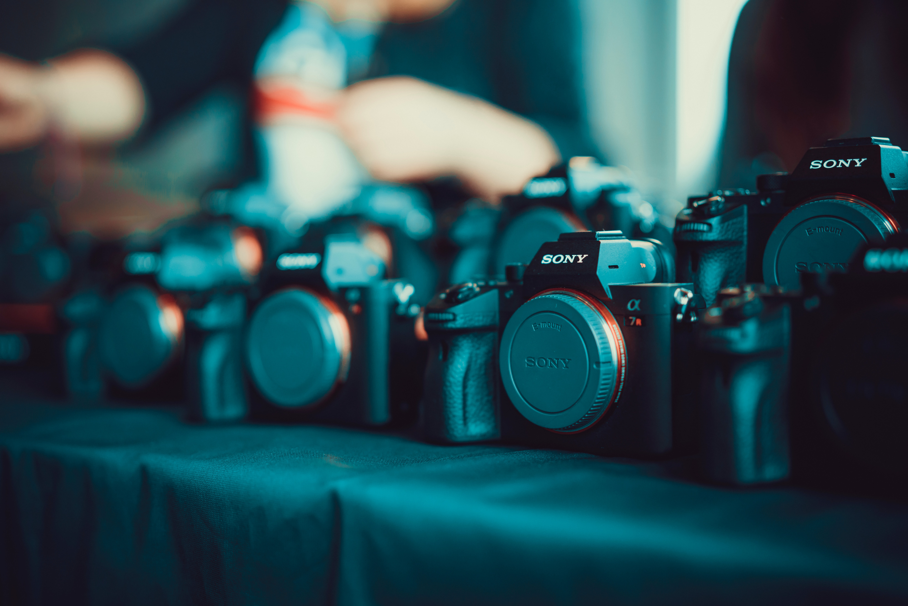
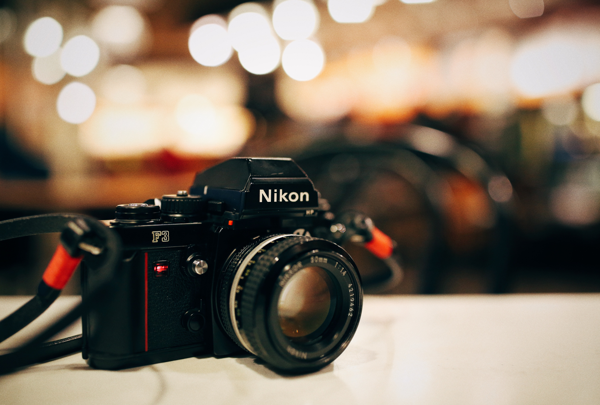

- Sony
- Cannon
- Nikon
Sony
Sony Corporation (ソニー株式会社, Sonī Kabushiki Kaisha, /ˈsoʊni/ SOH-nee, commonly known as Sony and stylized as SONY) is a Japanese multinational conglomerate corporation headquartered in Kōnan, Minato, Tokyo. Its diversified business includes consumer and professional electronics, gaming, entertainment and financial services.
The company owns the largest music entertainment business in the world, the largest video game console business and one of the largest video game publishing businesses, and is one of the leading manufacturers of electronic products for the consumer and professional markets, and a leading player in the film and television entertainment industry.
Sony was ranked 97th on the 2018 Fortune Global 500 list.
Sony Corporation is the electronics business unit and the parent company of the Sony Group (ソニー・グループ, Sonī Gurūpu), which is engaged in business through its four operating components: electronics (AV, IT & communication products, semiconductors, video games, network services and medical business), motion pictures (movies and TV shows), music (record labels and music publishing) and financial services (banking and insurance).
These make Sony one of the most comprehensive entertainment companies in the world.
The group consists of Sony Corporation, Sony Electronics Corporation, Sony Pictures, Sony Interactive Entertainment, Sony Music, Sony Financial Holdings, and others.
Sony is among the semiconductor sales leaders and since 2015, the fifth-largest television manufacturer in the world after Samsung Electronics, LG Electronics, TCL and Hisense.

(Photo by Alexander London on Unsplash, Link to Sony website)
Canon
Canon Inc. (キヤノンキャノン株式会社, Kyanon kabushiki gaisha) is a Japanese multinational corporation specializing in the manufacture of imaging and optical products, including cameras, camcorders, professional displays, TV broadcasting and film equipment, projectors, photocopiers, photolitography equipment (steppers, scanners), computer printers, image scanners, binoculars, microscopes, medical equipment (including Computer Tomography diagnostic systems, MRI and diagnostic ultrasound systems), LCD and OLED panel manufacturing equipment, CCTV solutions, imagining sensors, calculators, high precision positioning and measurement devices (such as rotary encoders), and custom optical components (including lenses) for third party companies.
It is headquartered in Ōta, Tokyo, Japan.
Canon has a primary listing on the Tokyo Stock Exchange and is a constituent of the TOPIX Core30 and Nikkei 225 index.
It has a secondary listing on the New York Stock Exchange.

(Photo by KAL VISUALS on Unsplash, Link to Canon website)
Nikon
Nikon Corporation (株式会社ニコン, Kabushiki-gaisha Nikon) (UK: /ˈnɪkɒn/ or US: /ˈnaɪkɒn/; About this soundlisten (help·info)[ɲikoɴ]), also known just as Nikon, is a Japanese multinational corporation headquartered in Tokyo, Japan, specializing in optics and imaging products.
Nikon's products include cameras, camera lenses, binoculars, microscopes, ophthalmic lenses, measurement instruments, rifle scopes, spotting scopes, and the steppers used in the photolithography steps of semiconductor fabrication, of which it is the world's second largest manufacturer.
The company is the eighth-largest chip equipment maker as reported in 2017.
The companies held by Nikon form the Nikon Group. Among its products are Nikkor imaging lenses (for F-mount cameras, large format photography, photographic enlargers, and other applications), the Nikon F-series of 35 mm film SLR cameras, the Nikon D-series of digital SLR cameras, the Coolpix series of compact digital cameras, and the Nikonos series of underwater film cameras.
Nikon's main competitors in camera and lens manufacturing include Canon, Sony, Fujifilm, Panasonic, Pentax, and Olympus.

(Photo by Isen Jiang on Unsplash, Link to Nikon website)